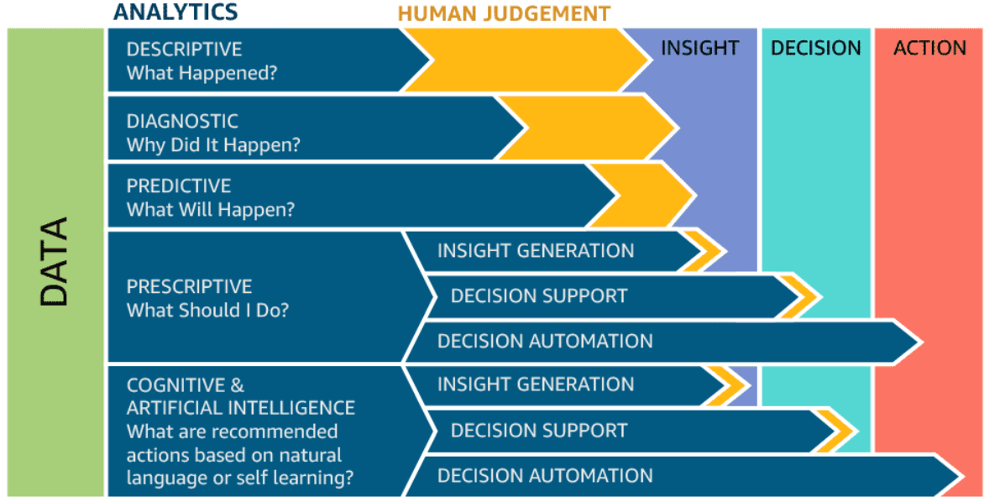

Big Data and Cloud Platforms (Module 2)
Towards data platforms
Matteo Francia
DISI — University of Bologna
m.francia@unibo.it
How did we get here?
Data-Driven Innovation
- Use of data and analytics to foster new products, processes, and markets
- Drive discovery and execution of innovation, achieving new services with a business value
Analytics
- A catch-all term for different business intelligence (BI) and application-related initiatives
- E.g., analyzing information from a particular domain
- E.g., applying BI capabilities to a specific content area (e.g., sales, service, supply chain)
Advanced Analytics
- (Semi-)Autonomous examination of data to discover deeper insights, make predictions, or generate recommendations (e.g., through data/text mining and machine learning)
Augmented Analytics
- Use of technologies such as machine learning and AI to assist with data preparation, insight generation, and insight explanation to augment how people explore and analyze data
https://www.gartner.com/en/information-technology/glossary (accessed 2022-08-01)
How did we get here?
From descriptive to prescriptive analytics
 Case study: photo gallery
Case study: photo gallery
Introduction
Managing large photo collections is increasingly challenging.
Common issues include:
- Difficulty searching and organizing images
- Loss of contextual information about each photo
- Time-consuming manual tagging and categorization
Challenges in Photo Gallery Management
- Thousands of images accumulate over time
- Manual metadata entry is slow and error-prone
- Finding images based on content is difficult
- Metadata inconsistency leads to poor searchability
How YOLO Sees the Image
- Input image is divided into a grid (e.g., 13x13)
- Each grid cell is responsible for objects whose center falls in the cell
- Each cell predicts bounding boxes + confidence + class probabilities
What Each Cell Predicts
For each bounding box:
- Coordinates: (x, y, width, height)
- Confidence: probability an object exists × IoU with ground truth
- Class probabilities: likelihood of each object class
How Bounding Boxes Are Calculated
- Each cell predicts offsets relative to the cell
- Uses anchor boxes for different object sizes
- Confidence score = Pr(object) × IOU(predicted box, ground truth)
YOLO Neural Network
- CNN backbone extracts features from the image
- Detection layers predict boxes and class probabilities for all grid cells
- Outputs a single tensor containing all predictions
Post-Processing Predictions
- Thresholding: Remove boxes with confidence < threshold
- Non-Maximum Suppression (NMS): Remove overlapping boxes that predict the same object
Result: clean set of detected objects with labels, boxes, and confidence
YOLO Versions
- YOLOv1: Original, fast, less accurate for small objects
- YOLOv2/v3: Anchor boxes, improved accuracy
- YOLOv4/v5/v8: Modern improvements, faster, real-time capable
Why YOLO is Fast
- Single forward pass per image → all objects detected at once
- No sliding windows or region proposals (unlike R-CNN)
- Real-time capable: 30–150 FPS depending on model
How YOLO Works in the Gallery
- Scan images in the collection
- Detect objects (e.g., person, dog, car)
- Record bounding boxes and confidence
- Generate per-image JSON metadata
Example JSON snippet:
{
"filename": "dog.jpg",
"detections": [{"label": "dog", "conf": 0.87}]
}
Problem: how do we manage data heterogeneity?
Data lakehouse
Main features:
- Store data in a low-cost object store using a standard file format such as Apache Parquet
- Implement a transactional metadata layer on top of the object store that defines which objects are part of a table version
- Implement management features within the metadata layer
Challenges:
- The metadata layer is insufficient to achieve good SQL performance
- DWHs use several techniques to get state-of-the-art performance
- Storing hot data on fast devices such as SSDs, maintaining statistics, building efficient indexes, etc.
- In a Lakehouse it is not possible to change the format, but it is possible to implement other optimizations that leave the data files unchanged
Data lakehouse
Challenges:
- Most data lakes (e.g., cloud object stores) are simple key-value stores without cross-key consistency.
- Multi-object updates aren’t atomic, and there’s no isolation between queries.
- Queries updating multiple objects can expose readers to partial updates as each object is written individually.
- For large tables with millions of objects, metadata operations are costly.
- The latency of cloud object stores can make data-skipping checks slower than the query itself.
Delta Lake uses a transaction log compacted into Apache Parquet for much faster metadata operations on large tabular datasets.
- The log resides in the
_delta_log subdirectory.
- It contains:
- JSON objects with sequential IDs for log records (i.e., commits)
- Periodic checkpoints summarizing the log up to that point
Data lakehouse
| Data format |
Proprietary format |
Open format |
Open format |
| Types of data |
Structured, limited semi-structured |
* |
* |
| Data access |
SQL-only, no file access |
File access |
APIs for SQL, R, Python, etc. |
| Reliability |
High quality, ACID transactions |
Low quality, “data swamp” |
High quality, ACID transactions |
| Governance & security |
Fine-grained (row/column-level) |
Weak governance; file-level security |
Fine-grained (row/column-level) |
| Performance |
High |
Low |
High |
| Scalability |
Expensive at scale |
Scales cheaply for any data type |
Scales cheaply for any data type |
| Use case |
BI |
Machine learning |
Unified for BI and ML |
Which functionalities for (automated) data management can you think about?
Data governance
Data governance
Data governance
Techniques to ensure that data is secure, private, accurate, available, and usable
- It includes the actions people must take, the processes they must follow, and the technology that supports them throughout the data life cycle
- Every organization needs data governance since industries proceed on their digital-transformation journeys
A data steward is a role that ensures that data governance processes are followed and that guidelines are enforced, and recommends improvements to data governance processes.
Case study: data governance
Problem: how can we manage a datalake?
Context:
- You are working for a consultancy company specialized in data engineering.
- This is a typical use cases of internships or thesis projects in DTM or ISI.
- Your client is a large enterprise that has accumulated massive amounts of heterogeneous data across departments.
┌─────────────────────────────────────────────────────────────────────────────────────────────────────────────────┐
│ DATA LAKE │
└─────────────────────────────────────────────────────────────────────────────────────────────────────────────────┘
┌──────────────────────────┐ ┌────────────────────────────┐ ┌───────────────────────────┐ ┌───────────────┐
│ bucket: dept-a │ │ bucket: dept-b │ │ bucket: shared │ │ bucket: ... │
│ (sales) │ │ (support) │ │ (reference) │ │ │
│ │ │ │ │ │ │ │
│ /customers/ │ │ /customers/ │ │ /geo/ │ │ │
│ ├─ customers_part1.csv | │ ├─ customers_v2.json │ │ ├─ countries.xlsx │ │ │
│ ├─ customers_part2.csv | │ └─ preferences.csv │ │ └─ continents.parquet │ │ │
│ └─ README.md │ │ │ │ │ │ │
│ │ │ /tickets/ │ │ /products/ │ │ │
│ /sales/ │ │ ├─ tickets_2023.csv │ │ ├─ products_v1.json │ │ │
│ ├─ sales_part1.csv │ │ └─ tickets_2024.csv │ │ └─ products_v2.json │ │ │
│ ├─ sales_part2.csv │ │ │ │ │ │ │
│ ├─ sales_part3.csv │ │ /exports/ │ │ /dictionaries/ │ │ │
│ └─ sales_part4.csv │ │ └─ customer_dump.parquet | | └─ country_codes.csv │ | │
│ │ │ │ │ │ │ │
│ /.../ │ │ /.../ │ │ /.../ │ │ │
│ └─ ... │ │ └─ ... │ | └─ ... | | |
│ │ │ │ │ │ │ │
│ /logs/ │ │ /logs/ │ │ /schemas/ │ │ │
│ └─ ingestion.log │ │ └─ api_events.log │ │ └─ inferred_schema.yaml | │ |
└──────────────────────────┘ └────────────────────────────┘ └───────────────────────────┘ └───────────────┘
Objectives: assess and organize the data lake to produce unified data assets ready for downstream analytics.
Brainstorming: which problems do you see?
Brainstorming: problems
Data lakes collect data from different sources (e.g., departments)
Files may have:
- Different formats (CSV, Excel, JSON)
- Different schemas (column names vary)
- Duplicated or overlapping concepts
A (table) schema is the blueprint or structure that defines how data is organized (within a table), specifying the names, data types, and constraints (for each column).
Users need to find and integrate relevant data but they don’t know:
- What is inside each file
- Which files describe the same entities
… and more
Brainstorming: where do we start?
Step 0: What do we have in the data lake?
ls -R /home/datalake/data/bronze/
/home/datalake/data/bronze/:
department_a department_b
/home/datalake/data/bronze/department_a:
countries.xlsx customers products sales
/home/datalake/data/bronze/department_a/customers:
customers_part1.csv customers_part2.csv
/home/datalake/data/bronze/department_a/products:
products_a.json products_b.json
/home/datalake/data/bronze/department_a/sales:
sales_part1.csv sales_part2.csv sales_part3.csv sales_part4.csv sales_part5.csv
/home/datalake/data/bronze/department_b:
customers products reviews
/home/datalake/data/bronze/department_b/customers:
customers_v2.csv
/home/datalake/data/bronze/department_b/products:
products_c.json
/home/datalake/data/bronze/department_b/reviews:
product_reviews.csv
Step 0: What do we have in the data lake?
Let’s keep to simple, and focus only csv, Excel, and JSON files
Step 2: Clustering by Schema Similarity
We can use clustering to group files with similar schemas
How do we define the schema similarity (or distance)?
Example:
- \(Schema_A = \{`id', `name', `email'\}\)
- \(Schema_B = \{`id', `fullname', `mail'\}\)
Step 2.a: Jaccard Index (Similarity Measures)
Measures overlap of sets: \(J(Schema_A, Schema_B) = \frac{|Schema_A \cap Schema_B|}{|Schema_A \cup Schema_B|}\)
Example:
- \(Schema_A = \{`id', `name', `email'\}\)
- \(Schema_B = \{`id', `fullname', `mail'\}\)
- \(|Schema_A \cap Schema_B| = |\{`id'\}| = 1\)
- \(|Schema_A \cup Schema_B| = |\{`id', `name', `email', `fullname', `mail'\}| = 5\)
- \(J(Schema_A, Schema_B) = \frac{1}{5} = 0.2\)
What do you think about this solution?
Step 2.a: Jaccard Index (Similarity Measures)
| countries.xlsx |
1 |
0 |
0 |
0 |
0 |
0 |
| customers_part1.csv |
0 |
1 |
1 |
0 |
0 |
0 |
| customers_part2.csv |
0 |
1 |
1 |
0 |
0 |
0 |
| products_a.json |
0 |
0 |
0 |
1 |
0.625 |
0.1 |
| products_b.json |
0 |
0 |
0 |
0.625 |
1 |
0.0769231 |
Agglomerative Clustering
Step 2.b: Fuzzy Matching (Similarity Measures)
Capture spelling variations in column names
- String similarity based on edit distance
- Two attributes are match if they differ by a few characters (i.e., if their similarity is above a threshold \(\alpha\))
- Example metric: Levenshtein distance
Example:
- \(Schema_A = \{`id', `name', `email'\}\)
- \(Schema_B = \{`id', `fullname', `mail'\}\)
- \(|Schema_A \cap Schema_B| = |\{`id', `email'\}| = 2\)
- \(|Schema_A \cup Schema_B| = |\{`id', `name', `email', `fullname'\}| = 4\)
- \(J_{fuz}(Schema_A, Schema_B) = \frac{2}{4} = 0.5\)
Step 2.b: Clustering by Schema Similarity
Compute the Fuzzy Matching similarity between files
- What about the computational cost/complexity?
Cluster files using Agglomerative Clustering
Cluster 1:
Intersection schema: {'currency', 'price', 'product_id', 'name', 'type'}
Average Jaccard similarity: 0.75
File: /home/datalake/data/bronze/department_a/products/products_a.json Schema: ['currency', 'price', 'product_id', 'name', 'type']
File: /home/datalake/data/bronze/department_a/products/products_b.json Schema: ['currency', 'material', 'price', 'product_id', 'name', 'color', 'type', 'stock']
File: /home/datalake/data/bronze/department_b/products/products_c.json Schema: ['currency', 'price', 'product_id', 'name', 'type']
...
Cluster 3:
Intersection schema: {'telephone', 'first_name', 'customer_id', 'country', 'email'}
Average Jaccard similarity: 1.00
File: /home/datalake/data/bronze/department_a/customers/customers_part1.csv Schema: ['telephone', 'first_name', 'customer_id', 'country', 'email']
File: /home/datalake/data/bronze/department_a/customers/customers_part2.csv Schema: ['telephone', 'first_name', 'customer_id', 'country', 'email']
...
Step 2.c: Embeddings (Similarity Measures)
Fuzzy Matching does not capture semantic similarity between column names
- We can use transformers to represent words as vectors
- Capturing semantic meaning, not just spelling
See the demo
Step 2.c: Embeddings (Similarity Measures)
Computing the embeddings:
{
'telephone': [-0.11484879 0.06089507 0.01468573 ... ],
'first_name': [-0.11216891 0.04061386 -0.01322238 ... ],
'customer_id': [-0.06831077 0.03470041 -0.02761879 ... ],
... }
Computing the similarity between embeddings:
sim_cos('country', 'location'): 0.63932264,
sim_cos('location', 'name'): 0.39198124,
sim_cos('name', 'first_name'): 0.6186802
Example:
- \(Schema_A = \{`id', `name', `email', `country'\}\)
- \(Schema_B = \{`id', `first\_name', `mail', `location'\}\)
- \(|Schema_A \cap Schema_B| = |\{`id', `email', `name', `country'\}| = 4\)
- \(|Schema_A \cup Schema_B| = |\{`id', `email', `name', `country'\}| = 4\)
- \(J_{emb}(Schema_A, Schema_B) = \frac{4}{4} = 1.0\)
Step 2.c: Embeddings (Similarity Measures)
| countries.xlsx |
1 |
0.4 |
0.4 |
0 |
0 |
0 |
| customers_part1.csv |
0.2 |
1 |
1 |
0.2 |
0.153846 |
0 |
| customers_part2.csv |
0.2 |
1 |
1 |
0.2 |
0.153846 |
0 |
| products_a.json |
0 |
0.2 |
0.2 |
1 |
0.625 |
0.3 |
| products_b.json |
0 |
0.153846 |
0.153846 |
0.625 |
1 |
0.230769 |

Agglomerative Clustering
Step 3: Merging
Apply unified schema to all files in a cluster
Concatenate into a single governed dataset
Problems?
Step 3: Merging
Within each cluster:
- Detect overlapping columns via hybrid similarity
- Map to canonical names
- Collapse multiple variants into a single column
Are we done?
Conclusion
- Automated semantic clustering and schema unification
- Provides governed integration in data lakes
- Enables reliable, auditable, and transparent data pipelines
Data governance: data profiling
Data profiling

Data profiling
Data profiling
Data profiling (Naumann 2014)
- A broad range of methods to efficiently analyze a given data set
- E.g., in a relational scenario, tables of a relational database are scanned to derive metadata, such as data types, completeness and uniqueness of columns, keys and foreign keys, and occasionally functional dependencies and association rules
Data profiling: single column (Iris dataset)
Schema and statistics
df.info()
<class 'pandas.core.frame.DataFrame'>
RangeIndex: 150 entries, 0 to 149
Data columns (total 5 columns):
# Column Non-Null Count Dtype
--- ------ -------------- -----
0 sepal length (cm) 150 non-null float64
1 sepal width (cm) 150 non-null float64
2 petal length (cm) 150 non-null float64
3 petal width (cm) 150 non-null float64
4 species 150 non-null int64
dtypes: float64(4), int64(1)
memory usage: 6.0 KB
Data profiling: single columns (Iris dataset)
Statistics
df.describe()
| count |
150 |
150 |
150 |
150 |
| mean |
5.80917 |
3.06167 |
3.72667 |
1.18333 |
| std |
0.823805 |
0.449123 |
1.75234 |
0.752289 |
| min |
4.3 |
2 |
1 |
0.1 |
| 25% |
5.1 |
2.8 |
1.5 |
0.3 |
| 50% |
5.75 |
3 |
4.25 |
1.3 |
| 75% |
6.4 |
3.4 |
5.1 |
1.8 |
| max |
7.7 |
4.4 |
6.7 |
2.5 |
How much metadata are we producing?
- 8 statistics × 4 columns = 32 metadata values
- The dataset contains 150 rows
- Metadata-to-data ratio: \(\frac{32}{150} ≈ 21.3\%\)
Data profiling: multiple columns (Iris dataset)
df.corr(method='pearson', numeric_only=True)
| sepal length (cm) |
1 |
-0.106926 |
0.862175 |
0.80148 |
| sepal width (cm) |
-0.106926 |
1 |
-0.432089 |
-0.369509 |
| petal length (cm) |
0.862175 |
-0.432089 |
1 |
0.962577 |
| petal width (cm) |
0.80148 |
-0.369509 |
0.962577 |
1 |
Data profiling
The results of data profiling are computationally heavy to discover
- E.g., discovering keys/dependencies usually involves some sorting step for each considered column
… and we need to verify them for groups of columns in a database
Complexity: given a table with four columns \(\{w, x, y, z\}\), how many groups of columns?
Data profiling
Given a table with four columns \(\{w, x, y, z\}\)
- To extract the (distinct) cardinality of each column, I will consider \(\binom{|C|}{1}=|C|\) columns \(\{(w), (x), (y), (z)\}\)
- To extract the correlations between pairs of columns, I will consider \(\binom{|C|}{2}\) groups \(\{(w, x), (w, y), (w, z), (x, y), ...\}\)
- Extracting the relationships among all possible groups of columns generalizes to \(\sum_{n=1}^{|C|}\binom{|C|}{n}=2^{|C|}−1\) groups
- 3 columns → 7 groups, 4 columns → 15 groups, 5 columns → 31 groups, 10 columns → 1023 groups, …
Data profiling
Use cases
- Query optimization
- Performed by DBMS to support query optimization with statistics about tables and columns
- Profiling results can be used to estimate the selectivity of operators and the cost of a query plan
- Data cleansing (typical use case is profiling data)
- Prepare a cleansing process by revealing errors (e.g., in formatting), missing values, or outliers
- Data integration and analytics
Data profiling: statistic query optimization
Table R
min(R.a) = 10
max(R.a) = 30
No need to access R.a, min(R.a) >= 10
Data governance: data provenance
Provenance (also referred to as lineage, pedigree, parentage, genealogy)
- The description of the origins of data and the process by which it arrived at the database
- Not only data products (e.g., tables, files), but also the processes that created them
Examples of use cases (Simmhan et al. 2005)
- Business domain.
- Users traditionally work with an organized data schema, where the structure and semantics of the data in use are shared across the corporation or even B2B. Yet, a large proportion of businesses deal with bad-quality data. Sources of bad data need to be identified and corrected to avoid costly errors in business forecasting.
- Scientific/research domain.
- Data used in the scientific field can be ad hoc and driven by individual researchers or small communities. The scientific field is moving towards more collaborative research and organizational boundaries are disappearing. Sharing data and metadata across organizations is essential, leading to convergence on common schemes to ensure compatibility. Issues of trust, quality, and copyright of data are significant when using third-party data in such a loosely connected network.
Data provenance: astronomers
Astronomers are creating an international Virtual Observatory.
- A federation of all the world significant astronomical data resources coupled with provision of the computational resources needed to exploit the data scientifically
- Astronomy changed from being an individualistic to a collective enterprise
- Telescope time is devoted/allocated to systematic sky surveys, and analysis is performed using data from the archives
- Astronomers are increasingly relying on data that they did not take themselves
- Raw data bear many instrumental signatures that must be removed in the process of generating data products (Mann 2002)
https://www.esa.int/Science_Exploration/Space_Science/Webb/Webb_inspects_the_heart_of_the_Phantom_Galaxy (accessed 2022-08-01)
Data provenance
Provenance is a graph, for which we have a standard: PROV-DM (Moreau and Groth 2022)
Entity
- Physical/conceptual things
Activity
- Dynamic aspects of the world, such as actions
- How entities come into existence, often making use of previously existing entities
Agent
- A person, a piece of software
- Takes a role in an activity such that the agent can be assigned some degree of responsibility for the activity taking place
https://www.w3.org/TR/2013/NOTE-prov-primer-20130430/
Data provenance
Measures of centrality
- Betweenness centrality (A)
- Number of shortest paths between two nodes that pass from a certain node
- Closeness centrality (B)
- Sum of distances to all other nodes.
- Eigenvector centrality (C)
- The score of a node is influenced by score of adjacent nodes (Page rank)
- Degree centrality (D)
Data provenance
Granularity (Simmhan et al. 2005)
- Fine-grained (instance level): tracking data items (e.g., a tuple in a dataset) transformations
- Coarse-grained (schema-level): tracking dataset transformations
Data provenance: fine-grained vs coarse-grained
How would you document this table update?
Original data
| “p1” |
10 |
| “p2” |
20 |
| “p3” |
30 |
| “p4” |
10 |
| “p5” |
20 |
| “p6” |
30 |
Update action: sales_v2 = sales_v1 + 1
| “p1” |
11 |
| “p2” |
21 |
| “p3” |
31 |
| “p4” |
11 |
| “p5” |
21 |
| “p6” |
31 |
Data provenance: fine-grained vs coarse-grained
Data provenance: fine-grained vs coarse-grained
Fine-grained provenance is typically used for single vertical applications
- It requires to collect huge amounts of detailed information to enable a very detailed tracing
Coarse-grained provenance is appropriate to ensure a broad coverage of heterogeneous transformations involving several applications
Choosing a granularity is the result of a trade-off between accuracy and computational effort
- Storing only the name and the version of a clustering algorithm enables an approximate reproducibility of the results
- Storing all its parameters makes this functionality much more accurate
Data provenance
Queries (Ikeda and Widom 2009)
- Where provenance: given some output, which inputs did the output come from?
- How provenance: given some output, how were the inputs manipulated?
- Why provenance: given some output, why was data generated?
- E.g., in the form of a proof tree that locates source data items contributing to its creation

Fine grained
Data provenance
Use cases for data provenance.
- Accountability and auditing
- Data quality
- Monitoring of the quality (e.g., accuracy) of the objects produced
- Notify when a transformation pipeline is not behaving as expected
- Debugging
- Inferring the cause of pipeline failures is challenging
- Store inputs of each operation with versions and environmental settings (RAM, CPUs, etc.)
Data governance: data versioning
Data versioning
Version control
- A class of systems responsible for managing changes to computer programs, documents, or data collections
- Changes are identified by a number/letter code, termed the revision/version number
However, data pipelines are not only about code but also about
- Model Version control
- Data Version Control
- Model Parameter Tracking
- Model Performance Comparison
Data versioning
Support CRUD (Create, Read, Update, Delete) operations with versions.
For example, on AWS (PUT, GET, DELETE)
What about updating?
Data governance: data compression
Compression
Data compression is the process of encoding information using fewer bits than the original representation
- Lossless: reduces bits by identifying and eliminating redundancy
- No information is lost in lossless compression
- Examples?
- Lossy: reduces bits by removing less important information
Summarization: find a concise representation of a dataset in a comprehensible, informative manner
Transaction dataset
| T1 |
Beer, Diapers, Cola |
| T2 |
Cola, Fanta |
| T3 |
Beer, Cola |
| T3 |
Beer, Diapers |
Frequent itemset mining
Itemset 1: {Cola}
Itemset 2: {Beer}
Itemset 3: {Beer, Diapers}
Data governance: entity resolution
Entity resolution
Entity resolution (Papadakis et al. 2020)
- (also known as entity matching, linking)
- Find records that refer to the same entity across different data sources (e.g., data files, books, websites, and databases)
Data governance: data catalog
Data catalog
A data catalog is an organized inventory of the company’s data (Olesen-Bagneux 2023)
- The data catalog provides an overview at a metadata level only
- No actual data values are exposed.
- Everyone see everything without fear of exposing confidential or sensitive data.
Data catalog
Metadata is organized into domains.
- A domain is a group of entities sharing knowledge, goals, methods of operation, and communication
Data catalog: processes vs capabilities
Processes describe how a company performs its tasks.
Capabilities describe what tasks a company performs.
- Neither processes nor capabilities reflect the business units of your company 1:1.
Case study: data governance
Check Colab

Data fabric
Data fabric is a “vision for data management […] that seamlessly connects different clouds, whether they are private or public environments.” (2016)
Frictionless access and sharing of data in a distributed data environment
- Enables a single and consistent data management framework
- Continuously identifies and connects data from disparate applications to discover unique business-relevant relationships
It is a unified architecture with an integrated set of technologies and services.
- Designed to deliver integrated and enriched data at the right time, in the right method, and to the right data consumer
- Combines key data management technologies such as data governance, integration, pipelining, and orchestration
Gartner (2021). Data fabric architecture
K2View Whitepaper (2021). What is a Data Fabric? The Complete Guide
Data fabric: example from Cloudera

Cloudera SDX
Data fabric
- Catalog all data: Cover business glossary, design-time, and runtime metadata.
- Enable self-service capabilities: Support data discovery, profiling, exploration, quality checks, and consumption.
- Provide a knowledge graph: Visualize links among data, people, processes, and systems for actionable insight.
- Deliver automatic integration: Help IT and business users with data integration, transformation, virtualization, and federation.
- Manage unified lifecycle: Maintain a consistent end-to-end Data Fabric lifecycle across platforms and teams.
Data fabric
Active metadata: leverage open APIs to connect platform services using metadata.
Active metadata is always on
- Automatically and continually collect metadata from various sources.
Active metadata is “intelligent”:
- Constantly process metadata to connect the dots and create intelligence.
- E.g., auto-classify sensitive data, automatic suggestions to document data.
Active metadata is action-oriented
- Active metadata should drive actions such as curating recommendations
Active metadata is open by default
- Use APIs to hook into every piece of the data platform.
Gartner (2021). Data fabric is key to modernizing data management
Automation through orchestration
The orchestrator is the component in charge of controlling the execution of computation activities
- Either through a regular scheduling of the activities
- Or by triggering a process in response to a certain event
Several entities (either processes or human beings) can cover this role to activate some data processes
Automation through orchestration
Dynamic/condition-based behavior
- Decide what data process should be activated under different conditions
- Decide how to tune the parameters in case of parametric data processes
Triggering
- Decide when to trigger a certain data process
Scoping
- Assess the trustworthiness of objects to decide if a certain data process should be activated or not
Resource estimation or prediction (based on previous executions and current settings)
- Decide the optimal amount of resources required to terminate successfully while leaving sufficient resources to the other concurrent process
- Negotiate the resources with the cluster’s resource manager
Automation through orchestration
R1 Compute/CPU resource provisioning
- Determine the right amount of resources
- Continuous management in a dynamic environment
R2 Storage
- Choose the right cloud storage resource, data location, and format (if the application is parametric)
R3 Data movement
- Dynamically transfer large datasets between compute and storage resources
R4 Synchronization and asynchronization
- Manage data flow dependencies across analytics tasks
Automation through orchestration
R5 Analytic Task Scheduling and Execution
- Coordinate workflows across diverse big data models
- Track and capture data provenance
R6 Service Level Agreement
- Meet user-defined QoS, such as strict deadlines
R7 Security
- Support anonymous computation, verify outcomes in multi-party settings, etc.
R8 Monitoring and Failure-Tolerance
- Ensure streamlined execution
- Handle or predict failures as they occur
Data mesh
Distributed data architecture under centralized governance and standardization for interoperability, enabled by a shared and harmonized self-serve data infrastructure
- Domain-oriented decentralized data ownership
- Decentralization and distribution of responsibility to people who are closest to the data, to support continuous change and scalability
- Each domain exposes its own op/analytical APIs
- Data as a product (quantum)
- Products must be discoverable, addressable, trustworthy, self-describing, and secure
- Self-serve data infrastructure as a platform
- High-level abstraction of infrastructure to provision and manage the lifecycle of data products
- Federated computational governance
- A governance model that embraces decentralization and domain self-sovereignty, interoperability through global standardization, a dynamic topology, and automated execution of decisions by the platform
Zhamak Dehghani (2019). Data monolith to mesh
Zhamak Dehghani (2020). Data mesh principles
Zhamak Dehghani (2021). Introduction to Data Mesh
Data mesh
Data Mesh organizes data around business domain owners and transforms relevant data assets (data sources) to data products that can be consumed by distributed business users from various business domains or functions.
- Data products are created, governed, and used in an autonomous, decentralized, and self-service manner
- Self-service capabilities, which we have already referenced as a Data Fabric capability, enable business organizations to entertain a data marketplace with shopping-for-data characteristics
What makes data a product?
A data product is raw data transformed into a business context
- Data products are registered in the knowledge catalog through specifications (XML, JSON, etc.).
- Data products need to be searchable and discoverable by potential data product consumers and business users.
- Cataloged: All data products need to be registered in the knowledge catalog.
- Data product description: The data product needs to be well-described.
- Access methods: for example, REST APIs, SQL, NoSQL, etc., and where to find the data asset.
- Policies and rules: who is allowed to consume the data product for what purpose.
- SLAs: agreements regarding the data product availability, performance characteristics, functions, and cost of data product usage.
- Data products themselves are not stored in the knowledge catalog
Case study: data mesh
Check the seminars from HERA.
Data mesh vs data fabric
Both provide an architectural framework to access data across multiple technologies and platforms.
Data fabric
- Attempts to centralize and coordinate data management
- Tackles the complexity of data and metadata in a smart way that works well together
- Focus on the architectural, technical capabilities, and intelligent analysis to produce active metadata supporting a smarter, AI-infused system to orchestrate various data integration styles
Data mesh
- Emphasis on decentralization and data domain autonomy
- Focuses on organizational change; it is more about people and process
- Data are primarily organized around domain owners who create business-focused data products, which can be aggregated and consumed across distributed consumers
Alex Woodie, 2021 https://www.datanami.com/2021/10/25/data-mesh-vs-data-fabric-understanding-the-differences/
Dave Wells, 2021 https://www.eckerson.com/articles/data-architecture-complex-vs-complicated
Data mesh vs data fabric

Data mesh vs data fabric
Data mesh vs data fabric
Data Fabric and Mesh are the results of the data architecture evolution.
- Many capabilities were in existence already long before the terms were coined
Takeaway:
- Abstract the “building blocks” of such platforms
- Let them evolve according to scalability and flexibility requirements
Data mesh
As new technologies and solutions mature to support a centralized approach to data access, distributed approaches like Data Mesh are expected to fall increasingly out of favor in enterprise IT.
Data mesh
As new technologies and solutions mature to support a centralized approach to data access, distributed approaches like Data Mesh are expected to fall increasingly out of favor in enterprise IT.
Wooclap (examples of exam questions)
“Example” of architecture

https://xkcd.com/2347/
(*) “Ormai sta xkcd é una base troppo usata” A. Tappi
On-premises manual provisioning
It is hardly advisable, if not for small and local tests.
Technical challenges
- Installation: how do I set up a new machine?
- Networking: how do I cable dozens of machines?
- Management: how do I replace a broken disk?
- Upgrade: how do I extend the cluster with new services/machines?
- (energy and cooling, software licenses, insurance…)
Technological challenges
- How do we configure a distributed environment?
- How do we set up/integrate/control independent services?
- How do we orchestrate data flows?
Business challenges
- Can we afford to spend resources on tasks that are not mission-oriented?
- No free lunch, each choice has a cost/benefit
- How much time does it take to master a technology?
- How many people do I need?
From DevOps…
DevOps combines development and operations to increase the efficiency, speed, and security of software development and delivery compared to traditional processes.
DevOps practices enable software development (dev) and operations (ops) teams to accelerate delivery through automation, collaboration, fast feedback, and iterative improvement.

DevOps
https://about.gitlab.com/topics/devops/ (accessed 2023-06-03)
… to DataOps
DataOps refers to a general process aimed at shortening the end-to-end data analytics life-cycle time by introducing automation in the data collection, validation, and verification process
Summing up
Storage should be flexible enough to support heterogeneous data models and raw data.
- From operational databases to DWHs (why?)
- From relational data models to NoSQL (why?)
- Data lake to (directly) ingest raw data
Storage, per se, is insufficient to get value from the data (examples?)
- We also need data processing and fruition
- Data lakes are blurring into data platforms
Data platforms support end-to-end data needs (which ones?)
- Building data platforms is hard (why?)
- Managing data platforms is hard; exploit metadata to ease this task
- Data lineage, compression, profiling, resolution, etc.
Open question: How do we deploy working data platforms?
How do I know if I am prepared for the exam?
Open a random slide, are you able to explain its content and connect it to the rest of the topics?
References
Ahmed, Mohiuddin. 2019. “Data Summarization: A Survey.” Knowledge and Information Systems 58 (2): 249–73.
Armbrust, Michael, Ali Ghodsi, Reynold Xin, and Matei Zaharia. 2021. “Lakehouse: A New Generation of Open Platforms That Unify Data Warehousing and Advanced Analytics.” In Proceedings of CIDR, 8:28.
Barika, Mutaz, Saurabh Garg, Albert Y Zomaya, Lizhe Wang, Aad Van Moorsel, and Rajiv Ranjan. 2019. “Orchestrating Big Data Analysis Workflows in the Cloud: Research Challenges, Survey, and Future Directions.” ACM Computing Surveys (CSUR) 52 (5): 1–41.
Bruno, Nicolas, and Surajit Chaudhuri. 2002. “Exploiting Statistics on Query Expressions for Optimization.” In Proceedings of the 2002 ACM SIGMOD International Conference on Management of Data, 263–74.
Codd, E. F. 1970.
“A Relational Model of Data for Large Shared Data Banks.” Commun. ACM 13 (6): 377–87.
https://doi.org/10.1145/362384.362685.
Couto, Julia, Olimar Teixeira Borges, Duncan D Ruiz, Sabrina Marczak, and Rafael Prikladnicki. 2019. “A Mapping Study about Data Lakes: An Improved Definition and Possible Architectures.” In SEKE, 453–578.
Forresi, Chiara, Enrico Gallinucci, Matteo Golfarelli, and Hamdi Ben Hamadou. 2021. “A Dataspace-Based Framework for OLAP Analyses in a High-Variety Multistore.” The VLDB Journal 30 (6): 1017–40.
Golfarelli, Matteo, Dario Maio, and Stefano Rizzi. 1998a.
“Conceptual Design of Data Warehouses from E/R Schema.” In
Thirty-First Annual Hawaii International Conference on System Sciences, Kohala Coast, Hawaii, USA, January 6-9, 1998, 334–43.
IEEE Computer Society.
https://doi.org/10.1109/HICSS.1998.649228.
———. 1998b.
“The Dimensional Fact Model: A Conceptual Model for Data Warehouses.” Int. J. Cooperative Inf. Syst. 7 (2-3): 215–47.
https://doi.org/10.1142/S0218843098000118.
Golfarelli, Matteo, and Stefano Rizzi. 2009. Data Warehouse Design: Modern Principles and Methodologies. McGraw-Hill, Inc.
Herschel, Melanie, Ralf Diestelkämper, and Houssem Ben Lahmar. 2017. “A Survey on Provenance: What for? What Form? What From?” The VLDB Journal 26 (6): 881–906.
Ikeda, Robert, and Jennifer Widom. 2009. “Data Lineage: A Survey.” Stanford InfoLab.
Mann, Bob. 2002. “Some Data Derivation and Provenance Issues in Astronomy.” In Workshop on Data Derivation and Provenance, Chicago.
Moreau, Luc, and Paul Groth. 2022. Provenance: An Introduction to PROV. Springer Nature.
Munappy, Aiswarya Raj, David Issa Mattos, Jan Bosch, Helena Holmström Olsson, and Anas Dakkak. 2020. “From Ad-Hoc Data Analytics to Dataops.” In Proceedings of the International Conference on Software and System Processes, 165–74.
Naumann, Felix. 2014. “Data Profiling Revisited.” ACM SIGMOD Record 42 (4): 40–49.
Olesen-Bagneux, Ole. 2023. The Enterprise Data Catalog. "O’Reilly Media, Inc.".
Özsu, M. Tamer. 2018.
“Database.” In
Encyclopedia of Database Systems, edited by Ling Liu and M. Tamer Özsu, 931–32. New York, NY: Springer New York.
https://doi.org/10.1007/978-1-4614-8265-9_80734.
Papadakis, George, Dimitrios Skoutas, Emmanouil Thanos, and Themis Palpanas. 2020. “Blocking and Filtering Techniques for Entity Resolution: A Survey.” ACM Computing Surveys (CSUR) 53 (2): 1–42.
Simmhan, Yogesh L, Beth Plale, Dennis Gannon, et al. 2005. “A Survey of Data Provenance Techniques.” Computer Science Department, Indiana University, Bloomington IN 47405: 69.